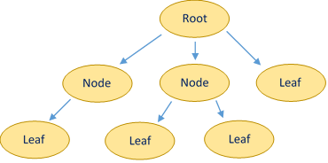

Trees
Trees are an important concept underlying a variety of data structures. We've mentioned them briefly before with linked lists. A tree is just what it sounds like—a tree. More formally, a tree is a hierarchical data structure that is either empty, or contains a 'root' node whose children are also trees. In plain English, a tree consists of nodes organized into a branching structure where each node can have one parent and an arbitrary number of children. (See diagram)
So, why are trees useful? Aside from modeling branching structures (say, a menu system), trees can be useful—even critical—in implementing data structures. For example, an ordered dictionary is often implemented as a self-balancing tree (which we will learn about later on). We'll go over how a tree structure allows us to implement a heap today.
Terminology
As just mentioned, the 'first' node in a tree is called the root. The root element gives access to all the others, and is hence usually what a data structure tracks.
Subsequent nodes are simply known as nodes, but the final layer (nodes without children) are known as leaves.
A tree is considered a 'binary' tree if all nodes have at most two children. A 'ternary' if every node has at most three children, etc.
A binary tree is considered 'complete' if all leaves are filled in from the left side. For example, the example would not be a complete tree because (ignoring the 3rd child of the root) second to leftmost leaf is not a child of the leftmost node in the above level.
Tree Operations
There are a few operations common throughout all types of trees. Adding and removing elements is actually not one of them, as the convention for doing so varies based on what kind of tree you're dealing with. For example, an arbitrary tree would support inserting a node anywhere, whereas a heap or a binary search tree have much more restrictive conversions.
What is common to all trees is traversal. A traversal algorithm is simply a procedure that visits each node in a specified manner. This is typically implemented recursively, but does not have to be. A traversal procedure will visit a node and call itself for each child node.
Preorder traversal first visits the current node, then its children in order. Postorder does the opposite; visiting the children then the current node. Inorder traversal calls itself for the left child, visits the current node, then visits the right child. Clearly, inorder only applies to binary trees.

Heaps
Heap Operations
Insertion
Removal